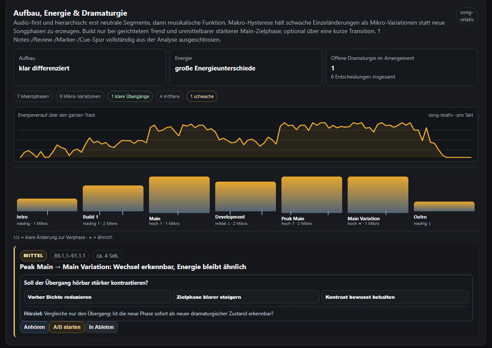
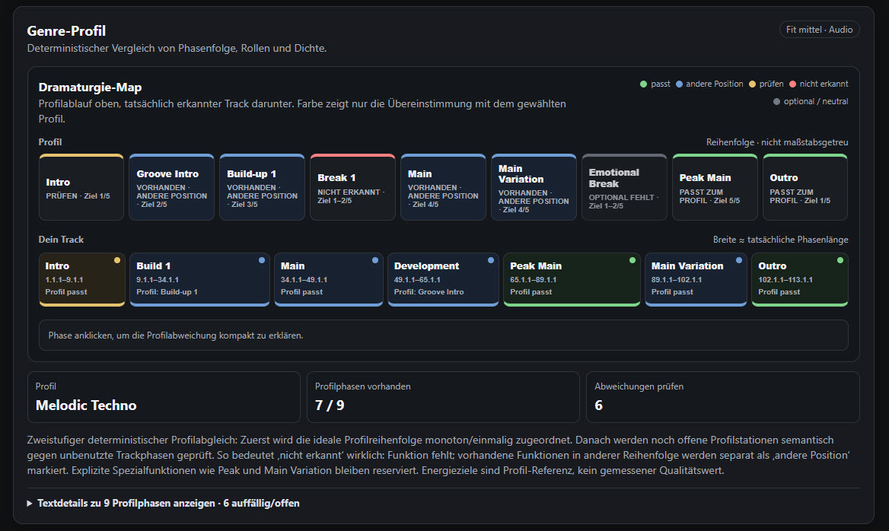
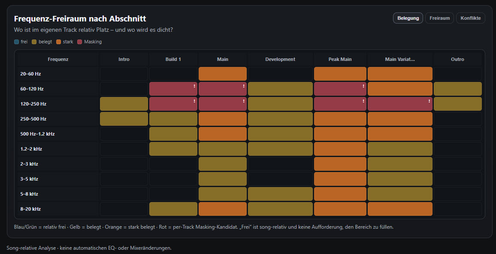
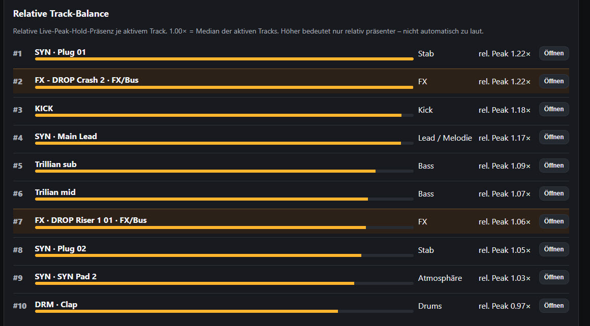

01 — PRIORISIEREN
Was ist jetzt wichtig?
Mix, Vordergrund und Dramaturgie werden gemeinsam priorisiert. Technische Rohdaten bleiben im Detail-Tab.
TrackLens arbeitet lokal auf deinem Rechner. Arrangement-Analyse und Auswertung funktionieren ohne Internetverbindung; dein Live Set muss nicht hochgeladen werden. Daraus entstehen konkrete Hörentscheidungen mit A/B-Ideen und direktem Sprung zur relevanten Stelle in Ableton.

TrackLens versucht nicht, deinen Track automatisch „zu verbessern“. Der Coach sammelt lokale Evidenz und verdichtet sie zu wenigen Fragen, die du mit deinen Ohren entscheidest.
Mix, Vordergrund und Dramaturgie werden gemeinsam priorisiert. Technische Rohdaten bleiben im Detail-Tab.
Jeder relevante Tipp erklärt warum er auftaucht, worauf du hören sollst und welche reversible A/B-Variante du testen kannst.
Keine Qualitätsnote und keine automatische Musikänderung. TrackLens zeigt Optionen — du entscheidest, ob der Kontrast, Fokus oder Mix wirklich besser wird.
Der Coach erkennt Makrophasen aus dem tatsächlichen Arrangement, hält kleine Layerwechsel als Mikrovariationen fest und legt Energieverlauf und Genre-Profil daneben. Notes- und Review-Spuren sind keine Phasen-Wahrheit.

Relative Pegel- und Spektrummessungen werden pro Songphase ausgewertet. Wenn zwei Elemente im relevanten Bereich konkurrieren, zeigt TrackLens die konkrete Stelle und fragt, welcher Track dort führen soll.

TrackLens nutzt seine relativen Live-Messungen für einen hörbasierten Pre-Master-Check. Es behauptet bewusst nicht, LUFS, True Peak oder Release-Readiness zu messen, wenn dafür kein echter Mastering-Meter vorhanden ist.

TrackLens schlägt konsistente Track- und Clipnamen aus Rollen, Gruppen und Arrangement-Kontext vor. Die Vorschläge bleiben editierbar und werden erst nach deiner Auswahl geschrieben.

TrackLens arbeitet lokal auf deinem Rechner. Die Kernanalyse funktioniert auch ohne Internetverbindung. Der Analysepfad ist deterministisch und read-only: Der Coach darf messen und navigieren, aber deine Musik nicht stillschweigend verändern.
Kein „dein Track ist 82/100“, keine starre Genre-Schablone und keine Mastering-Freigabe aus ungeeigneten Messwerten. Der Coach markiert Evidenz, Unsicherheit und Hörentscheidungen getrennt.
Gesucht sind Ableton-Produzent:innen, die den Coach an realen unfertigen Tracks testen und melden, welche Empfehlungen hilfreich, falsch oder unnötig sind.
Aktuell am besten geeignet: elektronische Musik, Windows 10/11 und Ableton Live 12. Der Beta-Zugang ist während der ersten Validierungsrunde kostenlos.
Anfragen laufen in dieser technischen Beta über GitHub. Bitte keine E-Mail-Adresse oder privaten Projektdateien in das öffentliche Issue schreiben.